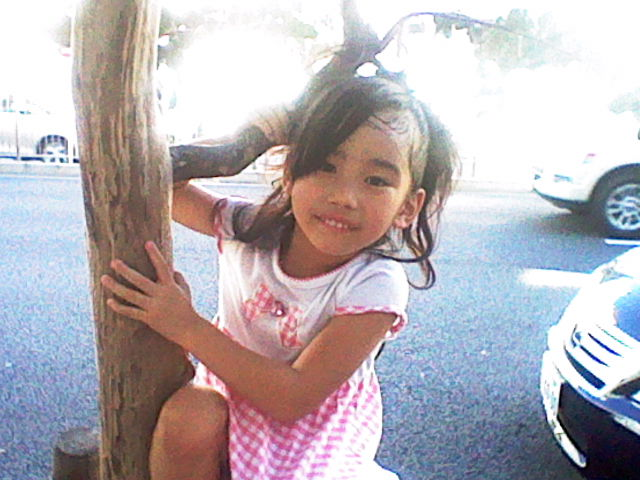
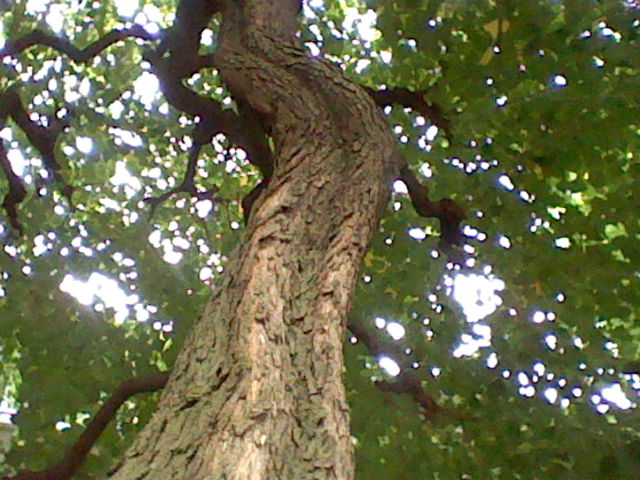
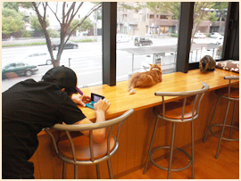
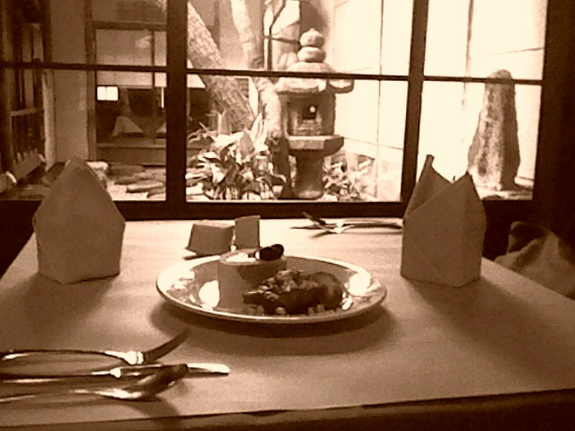
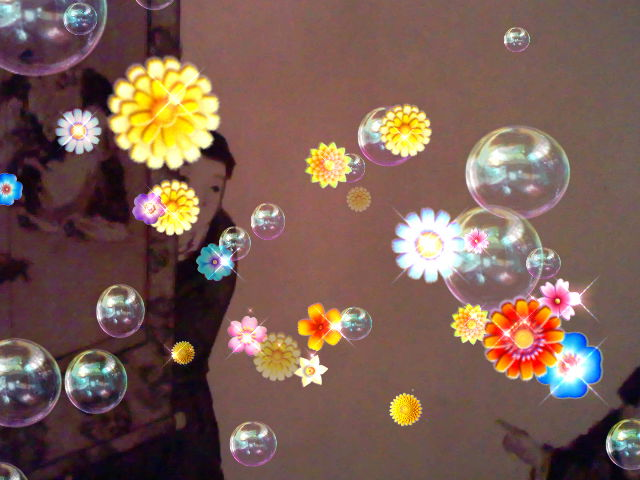
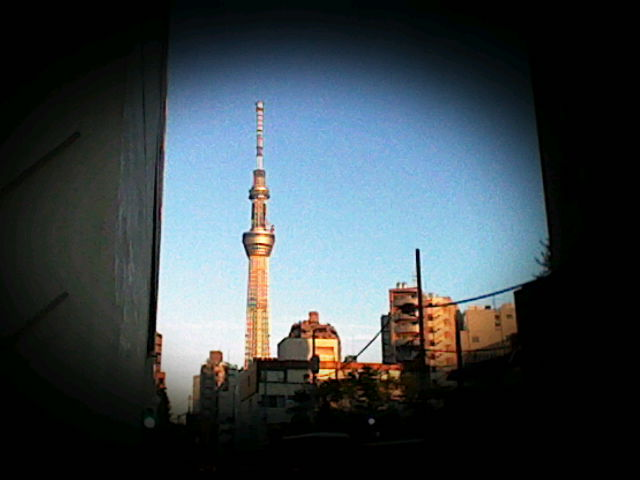
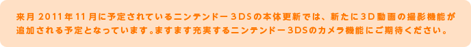

周囲が明るすぎたり、上画面に光が反射してプレビューが見づらいときには、本体右側面にある「3Dボリューム」で、あえて2D表示にしてしまうのもコツだと思います。撮影した写真は3Dで撮れているので、たくさん撮ってから暗い場所に移動して確認する、というのをくり返せば良いわけです。

せっかくコンパクトで持ち運びしやすいカメラなので、三脚やレフ板（被写体に光を反射させる板）といった機材は使わず、身軽さを重視した方が、より特性を活かせると思います。三脚がなくても、机や岩場などに置けば、本体を固定したまま、上画面の角度を変えてアングル調節ができます。また、暗くてもケータイについているLEDライトを点灯させて横に置いたり、ティッシュペーパーなどの白い紙や白い布をレフ板の代わりに使ったりもできます。そんな風に、その場で臨機応変に工夫する楽しさこそ、スナップ撮影の醍醐味なんです。
※
窓際の机の上なら、明るさも十分で、手ブレも回避できます。



「撮影モード」で選べる「キラキラカメラ」や「ピンホールカメラ」を使ったり、「カメラ設定」でモノクロやセピア色の写真を撮ったり、いろいろなエフェクトを試してみるのもオススメです。「撮影モード」と「カメラ設定」を組み合わせて、いろいろな写真のバリエーションを楽しんでみてください。また、スライドショー画面でラクガキできる機能も、みんなでワイワイ楽しめて良いと思います。
